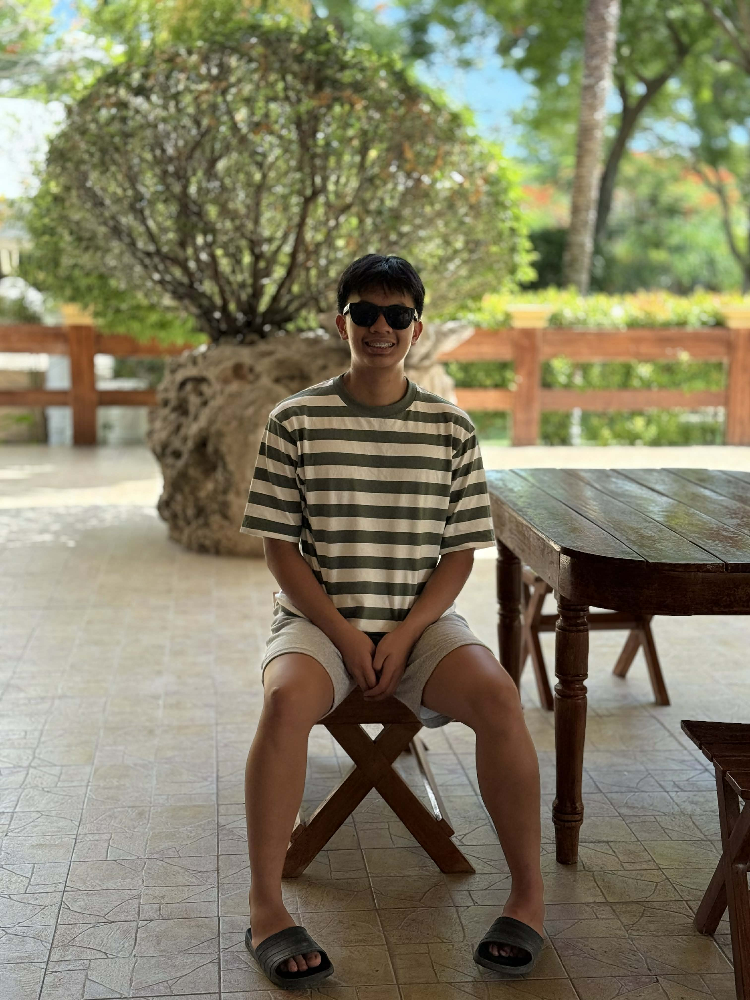

Who Am I?
I am Esteban, Raj Adrian C., a dedicated Bachelor of Science in Criminology student at the University of the Cordilleras. I am passionate about understanding the criminal justice system, promoting public safety, and developing the knowledge and skills needed to serve with integrity and professionalism.
I thrive in environments that require discipline, critical thinking, and teamwork. Whether studying criminal law, analyzing crime-related cases, or participating in community-based activities, I am committed to continuous learning and personal growth. I believe that dedication, ethical leadership, and compassion are essential qualities of an effective criminology professional.
My goal is to become a competent criminologist who contributes to crime prevention, justice, and community development. I am particularly interested in criminal investigation, forensic science, law enforcement, and community policing, with the aspiration of making a positive impact by helping create safer and more secure communities.
"Life begins at the end of your comfort zone."
Personal Information
Age
19 years old
Birthdate
August 7, 2006
Address
FA 178C Balili, La Trinidad, Benguet
Languages
Ilokano
Kankana-ey
Filipino
English
Educational Background
University of the Cordilleras
Bachelor of Science in Criminology
2025 - Present
Pursuing advanced studies in criminal investigation, forensics, and law enforcement procedures.
Star Colleges Inc.
High School
2019 - 2025
Completed senior high school with distinctions. Participated in Boy's Brigade Asia and leadership programs.
Star Colleges Inc.
Junior High School
2013 - 2019
Foundation years with focus on academics and character development.
My Core Values
Integrity
I believe that honesty, accountability, and ethical conduct are the foundation of justice and public trust.
Discipline
I strive to maintain self-control, responsibility, and professionalism in every task and challenge I face.
Compassion
I recognize the importance of empathy and respect when serving individuals and diverse communities.
Justice
I am driven by the pursuit of fairness and the protection of every individual's rights under the law.
Career Goals
Short Term
Complete my criminology degree with honors and secure an internship with a law enforcement agency.
Medium Term
Gain professional experience as a law enforcement officer and specialize in criminal investigation.
Long Term
Advance to leadership positions in law enforcement and contribute to public safety initiatives.